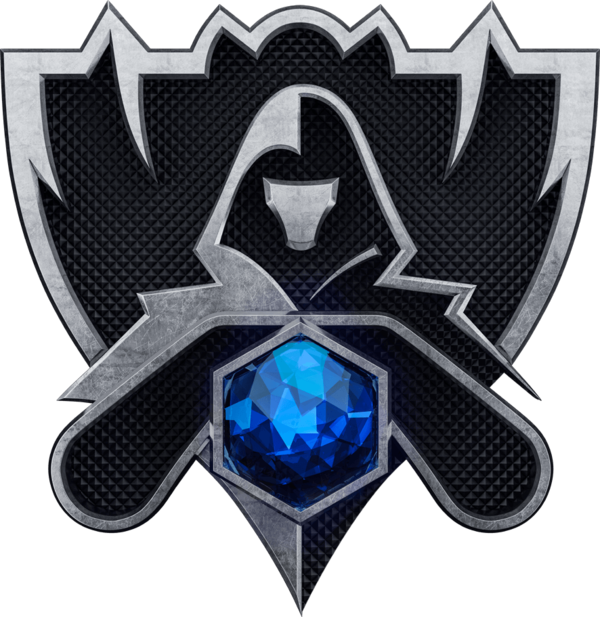
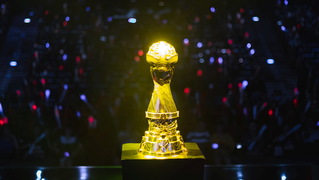
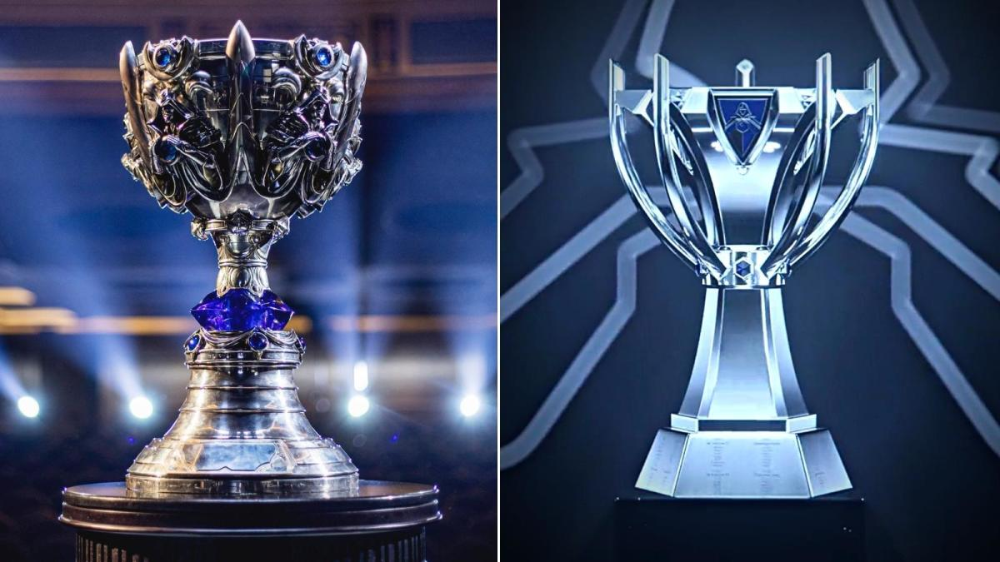

EventosLeague of Legends es uno de los juegos más populares del mundo, y su ámbito competitivo es
igualmente intenso. El
juego tiene una serie de ligas y torneos profesionales, tanto a nivel regional como internacional.
Algunos de los torneos internacionales más importantes son:
Trofeo MSI

El MSI es un torneo internacional de League of Legends que reúne a los mejores equipos de cada región para competir por el título de campeón mundial. El torneo se celebra anualmente y es uno de los eventos más importantes del calendario competitivo de League of Legends.
Trofeo Worlds
Antiguo Actual

El Worlds es el torneo más prestigioso de League of Legends, donde los mejores equipos de todo el mundo compiten por el título de campeón mundial. El torneo se celebra anualmente y es uno de los eventos mas esperados por los fanáticos del juego. El Worlds es conocido por su gran producción y su alto nivel de competencia, y atrae a millones de espectadores de todo el mundo. El torneo se lleva a cabo en diferentes paises y regiones, y cuenta con una gran cantidad de premios en efectivo y trofeos para los equipos ganadores.
Los trofeos de los torneos son una representación física del logro y la excelencia en el ámbito competitivo de League of Legends. Estos trofeos son altamente valorados por los equipos y jugadores que participan en los torneos, y se consideran un símbolo de éxito en el juego.
A continuacion una tabla con los diferentes ganadores de los (Worlds)
| Equipo | Año | Campeonatos logrados | Region | Fnatic | 2011 | 1 worlds | Suecia | Taipei Assassins (TPA) | 2012 | 1 worlds | Taiwán | SK Telecom T1 | 2013-2015-2016/2023/2024 | 4 worlds | Corea del Sur | Samsung Galaxy white | 2014 | 1 worlds | Corea del Sur | Samsung Galaxy | 2017 | 1 worlds | Corea del Sur | Invictus Gaming | 2018 | 1 worlds | China | FunPlus Phoenix | 2019 | 1 worlds | China | DAMWON Gaming | 2020 | 1 worlds | Corea del Sur | Edward Gaming | 2021 | 1 worlds | China | DRX | 2022 | 1 worlds | Corea del Sur |